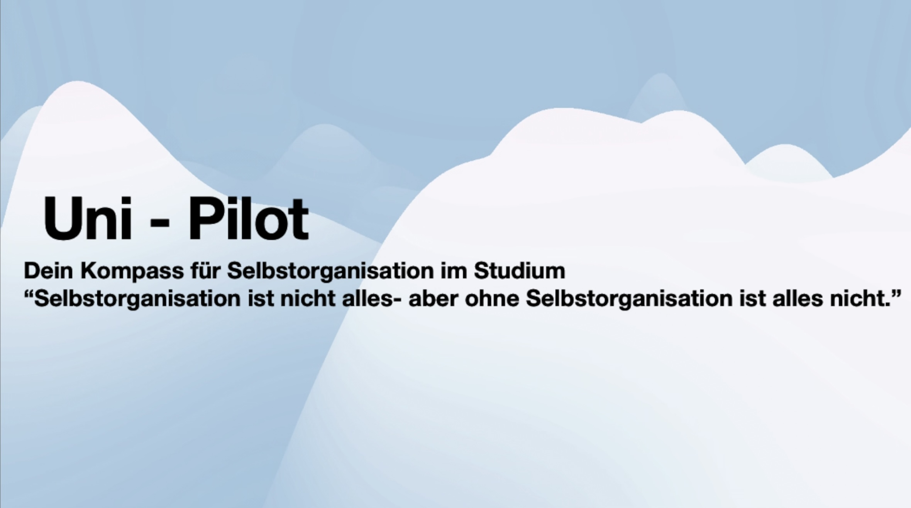

Call to Action
Intuit-Seminar step by step
ARE YOU INTUIT?Vorgehen
Hier finden Sie eine Vorlage und Erfahrungsberichte für die Umsetzung eines Intuit-Seminars. Empfehlenswert ist ein Vorgehen in vier didaktisch aufeinander aufbauenden Phasen.
I. Inititation und Einführung in das Projektdesign
Den Grundstein für die Projektarbeit und ein umsichtiges Miteinander legen
Bevor es um Inhalte gehen kann, sollte das Projektdesign und der erwartete Workload vorgestellt werden. Im Rahmen der Übung erfolgte dies durch einen Video-Input mit optionaler Sprechstunde via Zoom.
Themen verteilen und Gruppenbildung anregen
Gruppenbezug als produktives Miteinander statt Selbstzweck
Im Kurs wurde festgelegt, dass die Gruppen den Charakter von inhaltichen Ressonanzräumen darstellen sollten, um möglichen Koordinationsproblematiken vorzubeugen. Jede Teilnerhmer*in arbeitete so zunächst an einer eigenen Idee, welche aber an ein Gruppenthema geknüpft war.
Eindrücke der Kursteilnehmenden
Hat sehr viel Spaß gemacht. Die Zeit, [um] die Aufgaben daheim zu machen, war mega.
II. Ideen- und Konzeptionsphase
Zielgruppe analysieren, Ideen entwickeln
Zur inhaltlichen Vorbereitung auf die Gestaltung der Apps wurden drei Projektsitzungen mit unterschiedlichen Schwerpunkten etwa zur Analyse der Zielgruppe (Studienanfänger der Erziehungswissenschaften),der Auseinandersetzung mit geeigneten Übungsaufgaben oder der Erstellung der Apps mit Powerpoint durchgeführt.
Digitales und analoges Begleitangebot bereitstellen
Qualitativ hochwertige Selbstlernprodukte als Unterstützung des eigenen Lernprozesses
Zur Unterstützung der Studierenden wurde sowohl ein analoges Workbook, Checklisten und Beispiele zum Erstellen der Übungsaufgaben wie auch Online-Inputs (etwa zur Umsetzung der Apps mit Powerpoint) bereitgestellt.
Eindrücke der Kursteilnehmenden
Spannend, sich eine App zu überlegen.
III. Erarbeitungs- und Testphase
Ideen umsetzen, Angemessenheit prüfen
Nach einer eingängigen Konzeptionsphase sollten die Studierenden ihre Ideen in Form eines animierten Powerpointfoliensatzes mit Bildern, Soundeffekten, Quizzen etc. aufbereiten und durch Hyperlinks zu einer interaktiven App zusammenfügen.
Testung und Peer-Feedback
App im Rahmen der Peer-Group testen
Die Apps wurden von den Teilnehmenden in deren Freundes- oder Bekanntenkreis mittels der Methode des Lauten Denkens getestetet und die Verbesserungsvorschläge eingearbeitet. Die fertigen Produkte wurden über die Plattform Miro zugänglich gemacht und konnten dort von anderen Gruppen kommentiert werden.
Eindrücke der Kursteilnehmenden
Mal etwas Neues als immer nur Pädagogik.
IV. Ausprobierphase
Produkte darstellen und Ertrag reflektieren
Im Rahmen einer Developers Conference konnten die Inhaltsgruppen ihre Konzeptideen und Apps in Form eines höchstens einminütigen Elevator Pitches vorstellen. Die besten Gruppen wurden ausgezeichnet.
Ergebnissicherung und Konservierung
Nachhaltige Implementierung sichern
Die wichtigsten Inhalte und Ergebnisse des Kurses wurden in Form eines Highlight Reels mit KI-gernerierten Rap-Song gesichert und den Studierenden zur Verfügung gestellt. Weitere Umsetzungsvarianten der Apps mit universitären Stakeholdern wurden angeregt.
Eindrücke der Kursteilnehmenden
Etwas schade, dass man am Ende kein richtiges Endprodukt, sondern nur ein Konzept hat. [Es wäre schön], noch zusammen eine richtige App [zu] erstellen.
Vorstellung ausgewählter Apps
Die folgende Übersicht gibt einen Einblick in die von den Studierenden adressierten Erfahrungsbereiche und Konzeptideen. Anders als zu Beginn des Kurses erwartet, fokussierten sich die Studierenden vor allem auf Aspekte der studentischen Selbstorganisation und der sozialen Vernetzung.
Selbstorganisationsapps
Ein zentales Learning dieser Veranstaltung: Studieren bedeutet nicht nur, zitieren und Forschungsmethoden anwenden zu können. Es setzt bereits viel früher an. Es beginnt damit, dass Newcomer*innen an der Uni, in einem Studiengang, an einem Fachbereich zunächst das Studieren lernen müssen. Wie zur Hölle soll ich das alles mit meinen anderen Verpflichtungen unter einen Hut bekommen? Konzeptideen wie UniPilot, UniDrive oder StudyFlow nehmen sich dieser drängenden Fragen an. Vom Umgang mit der Prüfungsordnung bis zur persönlichen Präferenz in Sachen Selbstorganisation und Zeitmanagement – im Kurs wurde ein ganz spezifisches Verständnis für die jeweils individuellen Herausforderungen von Studierenden deutlich, welche sich unter anderem aus Betreuungskonstellationen und Berufstätigkeit während des Studiums ergeben.
Lehrveranstaltungsplaner
 Der Start in ein Studium kann zunächst überwältigend sein. Neue Umgebung, neue Leute, neue Inhalte und neue Erwartungen. App-Ideen wie der Modulkompass geben Antworten auf dringende Fragen und wirken als digitale Ersthelfer dem Studienstart-Blues entgegen. Wie wähle ich Kurse? Was muss ich da überhaupt machen? Wo findet das statt? Wie kriege ich meine Note? Die Universität stellt für viele Studierende einen neuen Kosmos mit vielen expliziten wie impliziten Regeln dar, der sich von ihrer bisherigen Lebenswelt unterscheidet. Mit Unterstützungsleistungen wie dem Modulkompass wird die Universität auch für First-Generation-Studierende oder Non-Traditionals ein barriereärmerer Ort, der alle Möglichkeiten der persönlichen Selbstentfaltung bereit hält.
Der Start in ein Studium kann zunächst überwältigend sein. Neue Umgebung, neue Leute, neue Inhalte und neue Erwartungen. App-Ideen wie der Modulkompass geben Antworten auf dringende Fragen und wirken als digitale Ersthelfer dem Studienstart-Blues entgegen. Wie wähle ich Kurse? Was muss ich da überhaupt machen? Wo findet das statt? Wie kriege ich meine Note? Die Universität stellt für viele Studierende einen neuen Kosmos mit vielen expliziten wie impliziten Regeln dar, der sich von ihrer bisherigen Lebenswelt unterscheidet. Mit Unterstützungsleistungen wie dem Modulkompass wird die Universität auch für First-Generation-Studierende oder Non-Traditionals ein barriereärmerer Ort, der alle Möglichkeiten der persönlichen Selbstentfaltung bereit hält.
Soziale Vernetzung unter Studierenden
Neben der Orientierung an der Uni beschäftigten sich Gruppen mit der sozialen Vernetzung von Studierenden. Die Erfahrungen aus Home Schooling oder ersten Remote-Lehrveranstaltungen während Corona veranlassten die Studierenden, gezielt Aspekten der Vereinsamung und des Einzelkämpfertums entgegenzuwirken. Die App-Idee UniConnect– Die Soziale Campus App bringt – ähnlich wie bei Dating- oder Freundschaftsapps – in diesem Fall Studierende auf Basis von Kompatibilitätstests oder -spielen zusammen. Durch ein ausgeklügeltes Belohnungssystem, vielfältige Übungsszenarien wie eine Campus-Reise, eine freiwillige Gedanken-Sharing-Funktion und Selbstreflexionselemente vereint die Idee ein ausgeprägtes Problembewusstsein mit einer außerordentlichen konzeptionellen Klarheit, da neben Datenschutz und Hosting auch Aspekte des überregionalen Rollouts mitgedacht werden.
Vielen Dank für Ihr Interesse an Intuit
Haben Sie Fragen zur Umsetzung?
Für weitere Fragen zu Konzept oder Umsetzung melden Sie sich gerne.